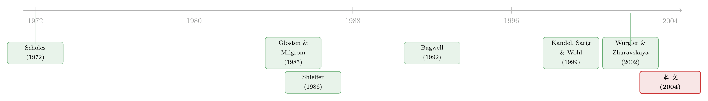

想买走一家公司千分之一的股票，得把价格推高百分之一
本文读的是 Kalay, Sade & Wohl (2004, JFE)：他们拿到了特拉维夫证券交易所（TASE）开盘集合竞价里每一笔订单的数据，第一次在一个「普通交易日」上、而非 IPO 或回购这类特殊事件里，直接把股票的需求曲线和供给曲线画了出来。结论令人不安——按流通股本标准化，需求与供给都极度缺乏弹性：想多买走一家公司千分之一（0.1%）的流通股，就得把价格往上推超过 1%。但他们真正想说的是：这条曲线有多陡，几乎完全取决于你用哪把尺子去量它。
1 一个被「事件」绑架了二十年的老问题
教科书上有一句几乎是信仰的话：在完美的资本市场里，每只股票都面对着一条水平的需求曲线。理由很干脆——一只股票不过是市场组合里一个可以被无数近似替代品取代的现金流，你想买多少，总有人按同一个价格卖给你，价格不会因为你买得多就涨。换句话说，需求弹性应该是无穷大。
可现实显然不是这样。一旦有人要大笔买入，价格就会动。于是过去几十年里，金融经济学一直在追问同一个问题：股票的需求曲线，到底有多陡？
麻烦在于，这条曲线极难直接观测。你不可能让同一只股票在同一时刻面对两个不同的需求量，再去看价格差多少。所以人们退而求其次，去找那些「需求或供给被外生地推了一把」的特殊场合：股票被纳入标普 500 指数、公司做股票回购、IPO 招股、限售股解禁。Shleifer（1986）发现纳入指数会推高股价，Harris and Gurel（1986）也是如此；Bagwell（1992）从 31 个荷兰式拍卖回购里量出供给弹性大约只有 1；Kandel, Sarig and Wohl（1999）从 27 个以色列 IPO 里量出需求弹性约 37；Liaw, Liu and Wei（2000）从 52 个台湾 IPO 里量出 24。
但你有没有觉得哪里不太对劲？
这些场合无一例外，都是反常的日子。IPO 的营销本身就是一场「请大家来买这一大笔异常供给」的邀请函；它漫长而预定好的时间表，本身就会把弹性抬高。回购虽然不那么张扬，公告也在替市场预热、招徕潜在的卖家。换句话说，我们一直是在「市场被特意安排好去吸纳一笔大单」的日子里量弹性——这就好比只在打折促销的那天去测量一家店的客流，然后宣称这就是它平时的人气。
于是一个自然的问题浮出水面：在一个什么都没发生的、普普通通的交易日里，一个普通交易者面对的需求与供给曲线，到底长什么样？
这正是 Kalay, Sade and Wohl 想回答的。而他们手里，恰好有一副能干这件事的数据。
2 识别策略：不是「估计」曲线，而是「重建」曲线
先说清楚这篇论文方法上最漂亮的地方——它几乎不需要常见意义上的「识别」。
大多数研究测弹性，用的是不同时点的价格变化：今天价格动了，是因为需求量变了（沿着需求曲线滑动），还是因为股票的内在价值变了（整条需求曲线平移）？这两件事在时间序列里纠缠不清。指数纳入推高股价，可以解释成供给有限的价格压力，也可以解释成「进了指数、预期流动性变好、市值理应上升」——你没法把「有限弹性」那部分和「基本面变化」那部分干净地分开。Wurgler and Zhuravskaya（2002）的综述就把这种两难讲得很透。
Kalay, Sade and Wohl 绕开了这道坎，靠的是 TASE 的开盘集合竞价（call auction）机制。
TASE 没有做市商，33 家会员、无隐藏限价单。开盘阶段（8:30–10:00），所有人提交限价单和市价单；从 9:00 起，交易所持续地公布「如果此刻撮合会成交在什么价、成交多少量」；9:45 之前订单可改可撤，9:45 之后能影响均衡价的单子就锁死了；10:00，供给与需求曲线相交，一个价格出清所有订单。
这意味着什么？意味着在 10:00 这同一个时点，研究者手里握着的，是构成需求曲线和供给曲线的每一张限价单——每个价格上有人想买多少、有人想卖多少，一笔不少。他们不是在「估计」一条看不见的曲线，而是直接把它画了出来。论文里 Fig. 1 就是随机抽一只股票、随机抽一天，画出来的真实需求与供给函数，以及两者相减得到的「超额需求（excess demand）」。同一个时点意味着股票的基本价值是固定的，不存在「价值变了」这个搅局者——这也是为什么作者敢说自己的研究 "is free from this difficulty"。
接着，一个自然的问题是：曲线画出来了，弹性怎么算？
3 真正关键的一步：分母里那个「相关股票总数」
弹性的教科书定义谁都会写：价格变动百分之几，对应数量变动百分之几，即 \([\Delta q/q]\,/\,[\Delta p/p]\)。分子——价格变一个 tick，需求量变多少股——是直接能从订单簿读出来的。
但真正关键的一步，藏在分母里：你要拿数量变化去除以「总量」，可这个「总量」到底是多少？换句话说——在一个开盘里，到底有多少股票算是「在市场上待售」的？
这正是全文的题眼。作者给出两个极端假设，构成弹性的上下界：
- 假设一（下界）：所有流通股都是潜在待售的。 那些没来交易的股东，只是因为价格还不够诱人；价格变得够多，他们就会动。既然如此，他们就是市场的一部分，分母应该用流通股总数（shares outstanding）。作者把这个口径叫做数量调整弹性（quantity-adjusted elasticity），它给出弹性的下界。
- 假设二（上界）：除了真正下单的人，其他股东在任何价格下都不在市场里。 比如监控成本把他们挡在了门外。那么相关的「宇宙」就只有当天开盘成交的量。用这个小得多的分母，弹性自然高得多。作者叫它成交量调整弹性（volume-adjusted elasticity），给出上界。
两者之间差着一个「换手率（turnover）」——成交量调整弹性，就等于数量调整弹性除以换手率。
具体的计算公式是这样的。对每只股票 \(i\)，用样本期 167 天，逐 tick 算出它的数量调整弹性：
公式里 \(k\) 取 \(\{-10,-5,-3,-1,1,3,5,10\}\) 个 tick（\(k=-3\) 就是相对开盘价降三个 tick），正负号区分价格上行和下行。看似平淡，但请记住——整篇论文的张力，就锁在 \(a2\) 那个分母的选择上。同一批订单，同一条曲线，换一个分母，量出来的弹性能差出四个数量级。
4 主要结果：同一条曲线，量出天差地别
先看下界，即按流通股本标准化的数量调整弹性。结果是触目惊心的「极度缺乏弹性」：
- 需求弹性：价格上行
0.083，下行0.013； - 供给弹性：价格上行
0.009，下行0.105； - 由此得到的超额需求弹性：上行
0.092、下行0.118。
这几个数字翻译成人话就是开头那句：想多买走一家公司千分之一（0.1%）的流通股，得把价格推高超过 1%。 一个普通交易者在普通一天面对的，就是这样一副陡峭得近乎垂直的曲线。也正因为日常的供需如此僵硬，市场才不得不发明出各种「临时制造流动性」的特殊装置来吞下大单——大宗交易的上层市场（upstairs market）、IPO、要约收购。离开这些特殊机制，普通人面对的就是僵硬的需求与供给。
再看上界，即按当天开盘成交量标准化：
- 需求弹性：上行
415.4，下行117.8； - 供给弹性：上行
63.6，下行267.0。
一下子从「近乎垂直」跳到「相当平坦」。同一条曲线，仅仅因为把分母从「流通股总数」换成了「开盘成交量」，弹性就从零点零几跳到了几百。作者还试了另外两个分母——按日均成交量（需求上行 102.98、供给下行 141.16 等）、按开盘时订单簿上的挂单总量（需求上行 77.96 等）——结论一致：测出来的弹性，对你选哪个分母极度敏感。 这就是论文标题里 "An Investigation of the Demand and Supply Schedules" 真正的分量：与其说它在报告一个弹性的数值，不如说它在警告你——脱离了标准化口径去谈「股票需求弹性是多少」，几乎是没有意义的。也正因如此，本文后半段一律只用数量调整弹性来做横向比较。
这里还藏着两个有意思的不对称，值得停下来看。
第一，需求比供给更有弹性。 这说得通：在以色列卖空（short sale）成本高昂，能供给股票的人被限制在「原本就持有这只股票的人」里，这个池子，远小于「全世界任何想买的人」组成的买方池子。卖家少，供给曲线自然更陡。（关于「谁在场、需求弹性就如何被改写」这一点，可参见《为什么「理性投资者」也会拒绝换股？——把需求弹性拆成两半》，以及《套利者的资产负债表，给每只股票标了一个价》。）
第二，曲线在「可执行（executable）」的那一段，要平坦得多。 注意：那些挂在均衡价之下的卖单、和挂在均衡价之上的买单，最终是会成交的。作者把这一侧叫「可执行区」。证据显示，需求曲线在价格上行那一侧、供给曲线在价格下行那一侧（也就是各自的可执行区），弹性都显著更高——这暗示需求曲线是凸的、供给曲线是凹的。差异方向并不意外，但量级很惊人。而且在可执行区里，弹性对你假设的价格变动幅度极敏感：价格变动越小，量出来的弹性越大；到了非执行区，弹性又低又对幅度不敏感。
5 开盘 vs. 连续竞价：哪个时段更「流动」？
把曲线画出来之后，一个自然的延伸是：开盘集合竞价测出的弹性，和连续竞价（continuous trading）阶段比，谁高谁低？
作者借用了 Tkatch（1999）提供的买卖价差与深度数据，覆盖 105 只股票中的 96 只、167 天中的 157 天。他们在连续竞价时段，以「半个买卖价差」为价格差，每隔 30 分钟（从 10:30 到 15:30）估一次超额需求的数量调整弹性。
结果有两层：
其一，连续竞价时段内，弹性在一天里是递增的——从最低 0.023 升到最高 0.034。这和 Glosten and Milgrom（1985）序贯交易模型的预言一致：交易日里不断被揭示的信息，缓解了逆向选择的严重程度，于是流动性随时间改善。
其二，乍一看，开盘（按一个 tick 的价格差）的超额需求弹性，显著高于交易日里任何时点。但作者很诚实地补了一刀：连续竞价用的价格差是「半个价差」，而开盘只用了「一个 tick」，两者不可比——而开盘的买卖价差均值（中位数）高达 11（7）个 tick。于是他们把开盘也按 11 个 tick 的价格差重算，得到的弹性 0.022，反而低于连续竞价时段。
结论因此变得微妙：开盘只在「小幅价格变动、小量交易」时才比连续竞价更流动；一旦量大、价格变动大，开盘就未必更优了。 这种「流动性是分时段、分情境的」结论，和后来一整支文献的精神是相通的（可参见《市场快「干涸」的那一刻：股与债的流动性，原来听的是同一个人》）。
6 价格冲击：在集合竞价里，怎么量「我这一单推动了多少价」？
最后一块拼图，是价格冲击（price impact）。
以往测价格冲击的文献——Keim and Madhavan（1997, 1998）、Madhavan（2000）、Stoll（2000）——几乎都是在连续竞价环境里做的。但集合竞价不一样：没有连续的成交，只有一个出清价，常规的价格冲击度量在这里水土不服。
于是作者提出了一个非常贴合集合竞价的定义，简洁到近乎优雅：
一笔订单的价格冲击 = 实际开盘价 − 把这笔订单抽走后会出现的开盘价。
因为他们握有全部订单，这两个价格都能算出来。把一只股票样本期内所有成交订单的价格冲击取平均，就得到这只股票的价格冲击。
结果：105 只股票的平均价格冲击是 0.57%，最小 0.0085%，最大 2.16%。不出所料，价格冲击与成交量反向相关——越活跃的股票，单笔订单越推不动价。量越大、买价越高（卖价越低），冲击越大、成交概率也越高，都在直觉之内。
但真正的反转，藏在买方和卖方的不对称里。
金融学早就猜测：由于卖空约束、由于卖家被限制在「自己手里有的股票」、而买家可以挑任何一只股票，买单更可能是被「关于股票内在价值的信息」驱动的。连续竞价市场里的证据（如 Saar, 2001 对大宗交易的研究）支持这一点。那么在集合竞价里呢？
答案是：一样。105 只股票里有 84 只（占 80%），买方的平均价格冲击高于卖方。买方与卖方的平均价格冲击分别是 0.74% 和 0.61%，中位数分别是 0.62% 和 0.44%。而且，市场下跌期间的价格冲击显著大于上涨期间；个股自身下跌时下的单，冲击也显著更大。但无论哪个时段，买单的冲击始终大于卖单。
更耐人寻味的是冲击的持久性：有一部分冲击是暂时的——正（负）的价格冲击之后，往往跟着一个负（正）的收益，而且这种回弹在卖方一侧更明显。这意味着卖压更像是「流动性驱动」而非「信息驱动」，事后价格会修复回来；而买压里则含着更多真信息，推上去就不太回得来。
顺带一提：Kehr, Krahnen and Theissen（2001）也在集合竞价里提了一个类似的价格冲击度量，但他们算的是「加进一笔假想的市价单」的冲击，所以数值更大——买（卖）的假想冲击为 1.28%（1.37%）。本文的度量混合了限价单与市价单的冲击，因此偏小（0.74% / 0.61%）。两者并不矛盾，量的是不同的东西。
7 文献脉络
这条研究脉络，可以顺着「我们怎么间接、再到直接地看清股票需求曲线」来读。
最早，Scholes（1972）研究二级市场配售，发现价格折扣与「卖方是谁」有关、而与「卖了多少量」无关，倾向于认为需求曲线近乎水平。接着 Shleifer（1986）借标普 500 指数纳入这个外生冲击，给出「需求曲线确实向下倾斜」的有力证据，Harris and Gurel（1986）同期呼应。再往后，人们把这套思路推广到各种「需求/供给被推一把」的事件：Bagwell（1992）的回购、Kandel et al.（1999）与 Liaw et al.（2000）的 IPO 拍卖、Ofek and Richardson（2000）与 Field and Hanka（2001）的限售解禁——每一篇都从一个特殊事件里挤出一个弹性数字。Wurgler and Zhuravskaya（2002）则把这些零散证据收拢成一篇综述。

与此并行的，是市场微观结构这一支：Glosten and Milgrom（1985）用序贯交易与信息不对称解释买卖价差为何随时间收窄；Biais, Hillion and Spatt（1999）专门研究了巴黎证券交易所开盘前的价格发现。
Kalay, Sade and Wohl（2004）站在这两支的交汇处。它的独特位置在于：第一个不依赖特殊事件、而是在普通交易日里直接重建出整条供需曲线的研究，并且顺手把「弹性对标准化口径极度敏感」这件被前人含糊带过的事，量化地摊在了桌面上。
8 评论与延伸（Q&A + 研究方向）
(a) 几个可能的疑问
Q：这篇论文的核心贡献，到底是「测出了弹性数值」，还是别的？
是别的。真正的贡献是把「弹性到底是多少」这个问题重新框定了：它证明了答案极度依赖你用什么分母去标准化（流通股本 vs. 成交量 vs. 订单簿挂单），同一条曲线能给出从
0.08到400+的弹性。所以与其追问「股票需求弹性是多少」，不如先讲清楚「在问哪个口径下的弹性」。那几个具体数字反而是次要的。
Q：为什么不用 IPO、回购那些现成的设定，非要去 TASE 的开盘里折腾？
因为那些设定都是「反常的日子」，市场被特意安排去吸纳一笔异常的供给或需求，量出的弹性未必能代表普通交易者在普通一天的处境。TASE 集合竞价的好处是：在出清的那个单一时点，整条供需曲线由真实订单完整构成，基本价值固定，不存在「价值变了还是数量变了」的纠缠。这是它相对前人最干净的地方。
Q：「需求比供给更有弹性」是不是以色列特有的现象？
部分是。论文把它归因于卖空成本高——能供股的只有原持有人，池子小，供给曲线更陡。这个机制在任何卖空受限的市场都成立，但卖空越自由的市场（比如美国大盘股），这种不对称应该越弱。所以这是个可检验的跨市场预测，而非以色列的怪癖。
Q：用「抽掉这一单后的开盘价」来定义价格冲击，会不会高估了单笔订单的作用？
有这个隐忧。它度量的是「这一单的边际贡献」，在订单稀薄的小盘股上，抽掉一单可能让出清价跳动较多，从而把冲击算大；而在活跃股上影响很小——这恰好与「价格冲击和成交量反向」的结果一致。它和 Kehr et al.（2001）「加进一笔假想市价单」的口径量的不是同一件事，比较时要小心。
Q：买方价格冲击大于卖方，能直接说明「买单更知情」吗？
只能算间接证据。冲击的不对称、加上卖方一侧更明显的事后价格回弹（正冲击后跟负收益），合在一起才比较有说服力：卖压更像流动性驱动、会被修复，买压含更多真信息、推上去不回头。但「知情」始终是从价格行为反推的，无法直接观测下单者的信息，这是这类研究共同的软肋。
Q：开盘到底比连续竞价更流动还是更不流动？
看情境。按一个 tick 的小价差比，开盘弹性更高（更流动）；但开盘价差均值有
11个 tick，按这个口径重算，开盘弹性0.022反而低于连续竞价。结论是：开盘只在小价格变动、小交易量时更流动，量一大就未必。又是一个「答案取决于你用哪把尺子」的例子——和全文主题一脉相承。
(b) 几个可能的研究问题与提案
-
把「分母敏感性」搬到美国公司债市场。 【经济故事】公司债极度依赖做市商、卖空几乎不可行，「相关待售宇宙」比股票更难界定——是按发行面额？按存量持仓？按当日报价深度？本文的核心洞见（弹性随分母剧烈变化）在债市可能更尖锐。 【可行性】中。需要 TRACE 逐笔成交加上交易商报价/RFQ 数据；识别上没有 TASE 那样干净的「单一出清时点」，需要用电子平台的 RFQ 快照近似一条供需曲线，构造较费力，但 doable。
-
外资持有人如何改变供给侧的弹性。 【经济故事】本文把「供给比需求更不弹性」归因于卖空受限、供股池子小。如果一只股票的相当一部分被外资被动持有、且这些外资几乎不参与本地开盘，那么供给池子被进一步压缩，供给曲线应当更陡。 【可行性】中高。需要按投资者类型拆分的持股数据（如韩国、台湾的交易所明细），叠加开盘订单簿。识别策略可用指数可投资度（investability）的外生变化做工具，与本博客中若干外资持有人研究的设定相容。
-
集合竞价 vs. 连续竞价的弹性，做一次跨市场的横截面对照。 【经济故事】本文只在 TASE 一家做了开盘与连续竞价的对比。不同交易所的开盘机制差异（是否公布指示性价格、撤单截止规则）应当系统性地改变弹性，这是把「微观结构设计 → 流动性」做成因果证据的好机会。 【可行性】中。多家交易所的开盘订单簿数据获取困难且不统一，但若能拿到 2–3 家结构不同的交易所，就足以做差异比较。
-
价格冲击的「持久 vs. 暂时」分解，能否预测个股的未来收益？ 【经济故事】本文发现卖方冲击更易回弹（暂时性更强）。如果能逐股估出「冲击中暂时成分的占比」，它可能是一个干净的流动性/知情度代理，进而预测横截面收益。 【可行性】高。只要有逐笔订单或高频成交数据即可构造，识别上可借鉴流动性因子的既有框架（可参见《把成交价从成交量里解放出来——重新丈量公司债的流动性》）。
我的判断。 这篇论文最大的价值不在某个弹性数字，而在它把一件常被含糊处理的事钉死了：「股票需求弹性是多少」这个问题，离开标准化口径就无法作答。 用集合竞价的单一出清时点来重建整条曲线，是一个干净到几乎不需要辩护的识别策略，二十年后看依然漂亮。
担忧主要有两点。其一是外部效度：TASE 是个小市场、卖空昂贵、且样本恰好处在 1998 年从集合竞价向连续竞价过渡的特殊阶段，「需求比供给更弹性」「曲线极陡」这些结论能多大程度推广到深度更好、卖空更自由的市场，是开放的。其二是「待售宇宙」终究是个假设而非观测：下界用全部流通股、上界用开盘成交量，真值落在中间哪里，论文并未给出一个有结构、可识别的答案——它诚实地把上下界都摆出来，但也因此没能收窄。
我接下来最想看到的，是把这套「直接重建供需曲线」的方法，搬到一个卖空更自由、或外资持仓占比可外生变动的市场里去，看看那两个关键的不对称（需求 vs. 供给、买方 vs. 卖方）会不会随之翻转或收窄。如果会，本文的机制解释就被证实；如果不会，那才是真正有意思的新谜题。
参考文献
- Bagwell, L.S. (1992). Dutch auction repurchases: an analysis of shareholder heterogeneity. Journal of Finance 47(1), 71–105.
- Biais, B., Hillion, P., Spatt, C. (1999). Price discovery and learning during the preopening period in the Paris Bourse. Journal of Political Economy 107, 1218–1248.
- Glosten, L., Milgrom, P. (1985). Bid, ask, and transaction prices in a specialist market with heterogeneously informed traders. Journal of Financial Economics 13, 71–100.
- Harris, L., Gurel, E. (1986). Price and volume effects associated with changes in the S&P 500 list: new evidence for the existence of price pressures. Journal of Finance 41(4), 815–829.
- Kalay, A., Sade, O., Wohl, A. (2004). Measuring stock illiquidity: an investigation of the demand and supply schedules at the TASE. Journal of Financial Economics 74(3), 461–486.
- Kandel, S., Sarig, O., Wohl, A. (1999). The demand for stocks: an analysis of IPO auctions. Review of Financial Studies 12(2), 227–247.
- Kehr, C.H., Krahnen, J.P., Theissen, E. (2001). The anatomy of a call market. Journal of Financial Intermediation 10(3–4), 249–270.
- Liaw, G., Liu, Y., Wei, K.C.J. (2000). On the demand elasticity of initial public offerings: an analysis of discriminatory auctions. Unpublished working paper, HKUST Business School.
- Saar, G. (2001). Price impact asymmetry of block trades: an institutional trading explanation. Review of Financial Studies 14(4), 1153–1181.
- Scholes, M. (1972). The market for securities: substitution versus price pressure and the effects of information on share prices. The Journal of Business 45(2), 179–211.
- Shleifer, A. (1986). Do demand curves for stocks slope down? Journal of Finance 41(3), 579–590.
- Wurgler, J., Zhuravskaya, K. (2002). Does arbitrage flatten demand curves for stocks? The Journal of Business 75(4), 583–608.